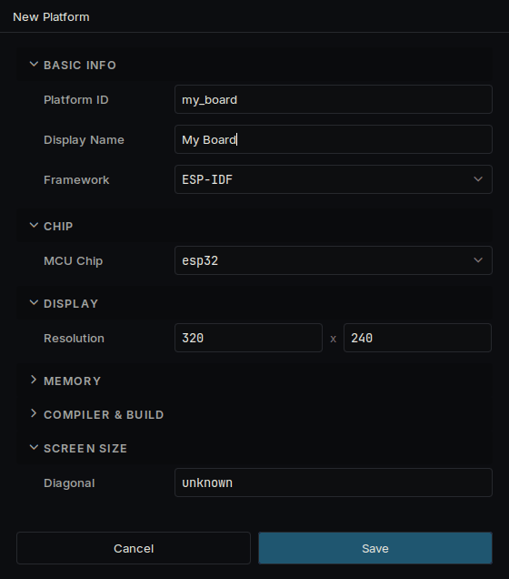
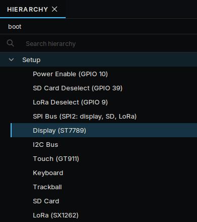
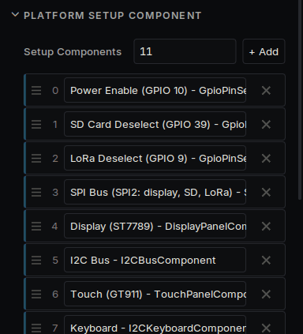
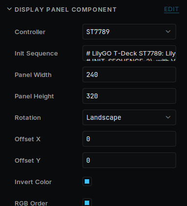

- 構築:
 1.18.0
1.18.0
|
Deki 0.40.0
組み込みディスプレイとデスクトップのためのモジュール式 C++ 2D エンジン
|
このガイドはまだ翻訳されていません。
Deki is modular and can run on almost any target with enough RAM. Your device does not have to be on the list: hardware support is a package like everything else, so you add what your device needs.
How you add a device depends on what it is.
| Your device | How to add it |
|---|---|
| An Espressif chip | The rest of this page |
| Anything else, such as a Linux handheld | A package with its own build backend, display and input, as deki-miyoo-boards has. Start from Platforms |
For an Espressif device you need:
| Part | Runs on a real device | Written and tested, not yet tried on a device |
|---|---|---|
| Screen | ST7789, RM67162 | ST7789P3, ILI9341, ST7796, ILI9488, ST7735, ST7735S, GC9A01, SSD1351, CO5300 |
| Touch | GT911, CST816S, CST816T | FT5x06, FT6x06, XPT2046 |
Starting from a device like yours saves most of the work. Install the package that has it, then copy it under a new name:
The copy is yours, in your project's platforms/my_device/ folder.
To start with nothing instead, press + beside the platform list in the Build panel and pick ESP-IDF.
Open the platform with the pencil in the Build panel and set what is different: the chip, the resolution, the screen's diagonal, and the flash and PSRAM under Memory.

Open Build → Platform Manager..., choose your device and press Open Boot Scene. This scene runs when the device starts, and it never reaches the screen: each object under Setup is one step that brings a piece of hardware up.

The steps run in the order of Setup Components, on the Setup object. The screen's bus has to come before the screen. For a part your device does not have, remove its line there and delete its object.

Select each step and set its pins in the Inspector.
| Step | What to set |
|---|---|
| Power pin | The pin that powers the screen, if your device has one |
| SPI bus | The bus and its clock and data pins |
| Display | Controller, Panel Width and Height, Rotation, and the pins |
| I2C bus | SDA and SCL |
| Touch | Controller and interrupt pin |
Panel Width and Height are the panel's own, before rotation: a 320 x 240 screen shown sideways is 240 wide and 320 high, with Rotation on Landscape.

Choose your device in the Build panel and press Build & Flash. View → Serial Monitor shows the boot log, which says what started and what did not.
| What you see | What to change |
|---|---|
| Nothing at all | The power pin and the backlight pin. Some backlights are on when their pin is low |
| Noise, or a white screen | The Controller and the pins. Try a lower SPI clock |
| Colours like a negative | Invert Color |
| Red and blue swapped | RGB Order |
| Dark colours pink, white green | Swap Bytes |
| Picture shifted, with a strip of noise | Offset X and Offset Y |
| Sideways or upside down | Rotation |
| Washed out, or a ghost of the last image | Init Sequence, from the panel maker's own start-up code |
Most of it is chosen for you. These describe the wiring, which the device cannot find out by itself.
| Setting | Set it to |
|---|---|
| SPI clock (spiWriteHz) | The fastest the panel takes. Most ST7789 modules take 80 MHz; on a parallel bus, 20 MHz is safe |
| TE pin (tePin) | The GPIO the panel's TE output is wired to, if it is. The best way to stop tearing |
| readsOnMosi | On when the panel answers on its data line instead of MISO. Only matters without a TE pin |
Once it runs, you can put the device in a package so others can pick it from the list: Platforms says how.